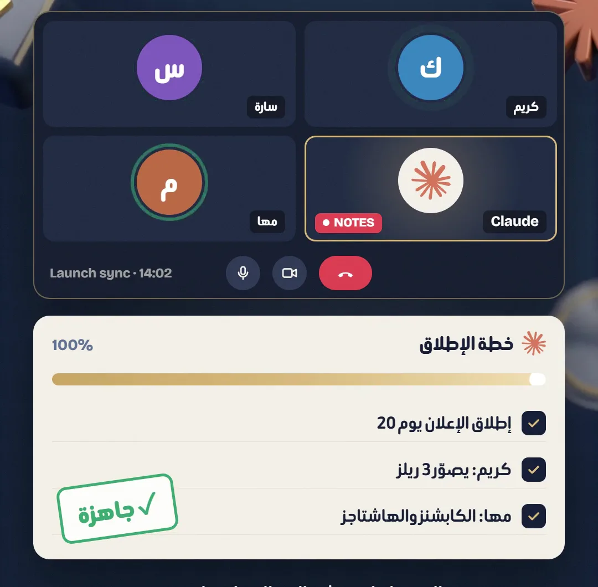
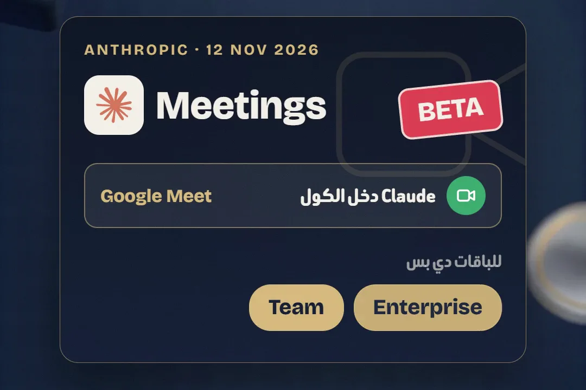
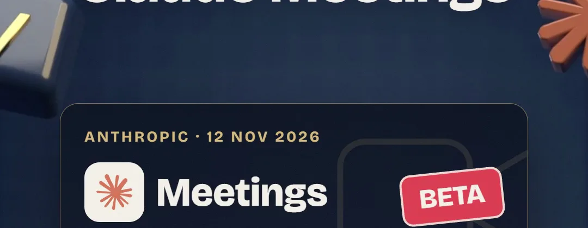
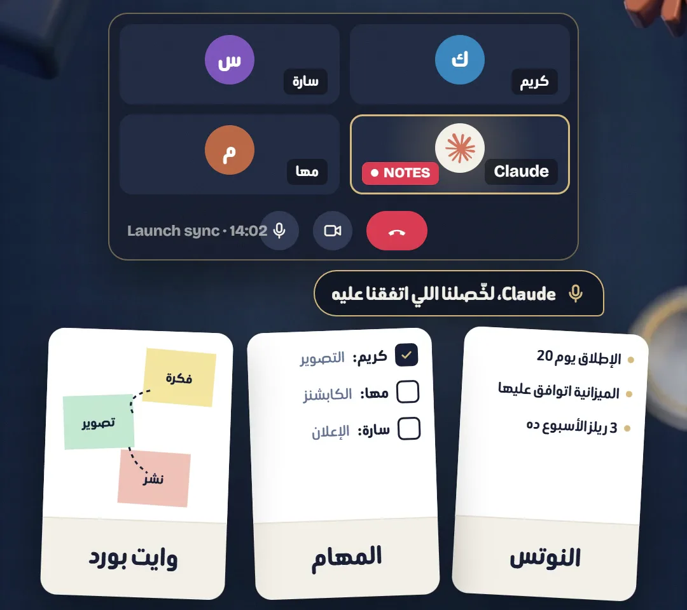
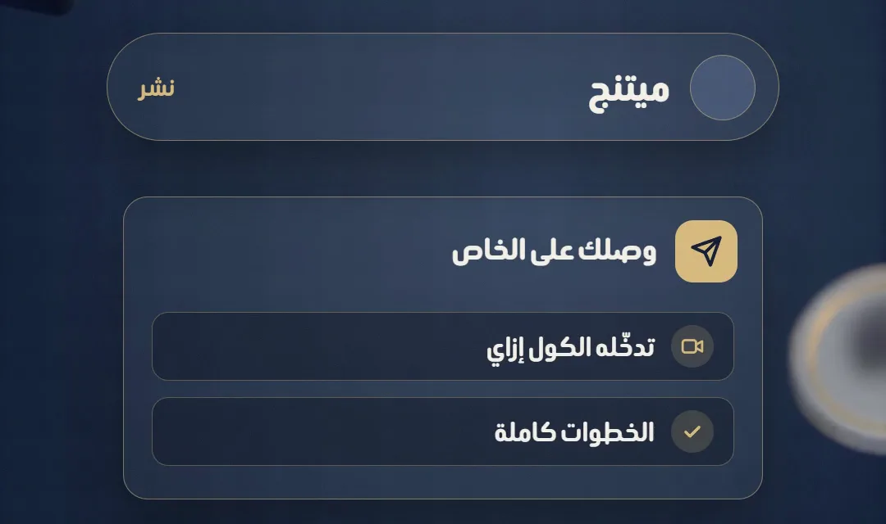

الخطة خلصــتوالكول لسه شغـــال
يوم 12 نوفمبر 2026 Anthropic نزّلت Claude Meetings بيتا: Claude بيدخل كول Google Meet كمشارك ظاهر، تسألوه بالصوت أو في الشات، وهو بيكتب النوتس والمهام ويبني دوكيومنت أو وايت بورد وإنتو لسه بتتكلموا. هنا مين يقدر يستخدمه وإزاي تدخّله أول اجتماع.


- 01
الخبر بالظبط
Claude Meetings بيخلّي Claude يحضر الاجتماع كمشارك ظاهر للكل: بيتابع الكلام، بيكتب النوتس والمهام، وبيبدأ الشغل وإنتو لسه في الكول. نزل بيتا يوم 12 نوفمبر 2026، وشغال على Google Meet بس دلوقتي، وAnthropic بتقول إن باقي برامج الكول جايين قريب.
إعلان Anthropic الرسمي ↗
مثال من الريل: الكول شغال والخطة بتتبني جنبه - 02
مين يقدر يستخدمه
باقات Team وEnterprise بس (مش Pro ولا Max ولا المجاني). في Team دعوة Claude شغالة لوحدها والأدمن يقدر يقفلها. في Enterprise الأدمن لازم يشغّلها للشركة كلها أو لجزء منها. ومش متاح في البيتا للشركات اللي عاملة ZDR أو HIPAA أو CMEK.
تفاصيل الخبر من Dataconomy ↗
Claude Meetings: بيتا من 12 نوفمبر 2026 لـ Team وEnterprise - 03
دخّله الكول
حد من الفريق يضيف Claude للكول على Google Meet، أو تشغّل الدخول التلقائي (auto-join). ولو عايزه في اجتماعات جاية، ضيفه من الكالندر جوه claude.ai. قبل ما تدخّله، اتأكد إن كل اللي في الكول موافقين إن الكلام يتكتب. الخطوات بالتفصيل في صفحة المساعدة.
صفحة المساعدة من Anthropic ↗
Claude داخل كول Google Meet كمشارك ظاهر للكل - 04
اسأله وهو في الكول
كلّمه بالصوت أو اكتبله في شات الكول، وهو بيرد كتابة. يقدر يستخدم الأدوات اللي إنت موصّلها بإذنك، ويبني دوكيومنت أو وايت بورد وإنتو بتعدّلوا عليه. قبل ما الكول يخلص اطلب منه يبعت ملخّص للفريق. جرّب الجملة دي:
Claude، لخّصلنا اللي اتفقنا عليه، واعمل قايمة مهام بإسم كل واحد ومعاد التسليم، وارسم خطة الإطلاق على وايت بورد.
تسأله بالصوت، يكتب النوتس والمهام ويبني الوايت بورد - 05
بعد الكول
كل اجتماع ليه صفحة في claude.ai فيها النوتس والمهام والخطة والوايت بورد، وتقدر تسأل Claude بعدين عن أي اجتماع فات. Claude بيحفظ الترانسكربت والملخص، مش الصوت. في البيتا النوتس والترانسكربت ببلاش، والدوكيومنتات والوايت بوردات اللي تتعمل في الكول ببلاش لحد 10 فبراير 2027.

اكتب «ميتنج» تحت الريل ويوصلك اللينك ده على الخاص
نصايح صغيرة
- Claude بيطلع لوحده من الكول لو دخل حد من برّه الشركة، إلا لو الأدمن سمح بالضيوف.
- دي بيتا ولسه بتنزل بالتدريج: لو مش لاقيه، اسأل الأدمن بتاع Team أو Enterprise.
عايز حد يعملهولك؟
مش فاضي تتعلم وتعمل بنفسك؟ أنا بعمل ريلز لبراندك بنفس الطريقة اللي بشرحها هنا.